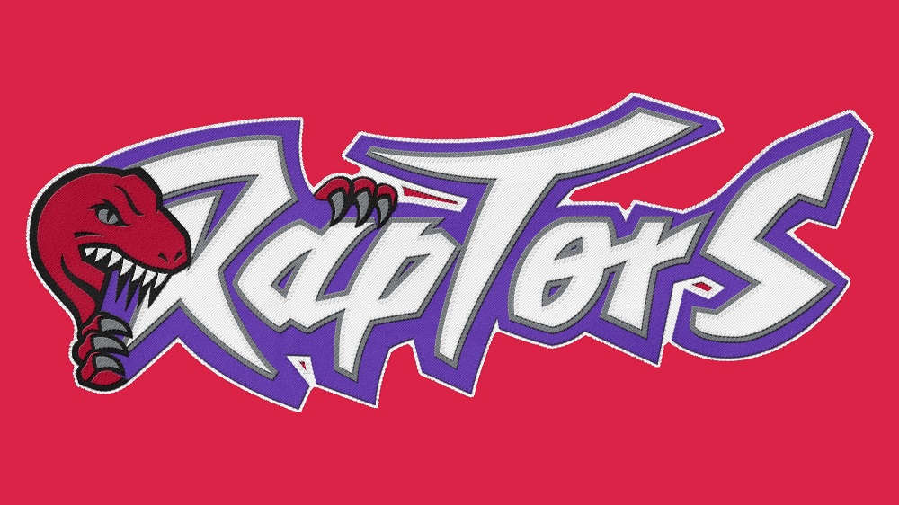
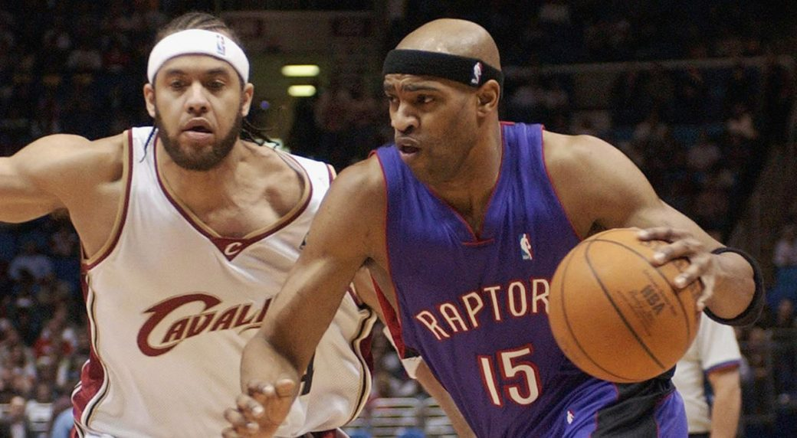
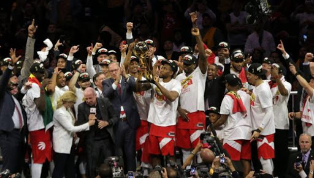

<DOCTYPE HTML>
	<!DOCTYPE html>
	<html>
	<head>
	<meta charset="utf-8">
		<title>Toronto Raptors</title>
			<LINK REL=StyleSheet type="text/css" HREF="JULIAN.css"  MEDIA=screen>
			
	</head>

	<body>
	
		<header>
			<h1>


				 
	<div class="lateral">
		<ul>
			
		
			<a href="https://www.instagram.com/raptors/"></a>
			<a href="https://twitter.com/raptors"></a>
			<a href="https://www.youtube.com/user/torontoraptors"></a>
			<a href="https://es-es.facebook.com/TorontoRaptors/"></a>
			
		</ul>
	</h1>
	<nav>
		<div class="menus">
			<ul>MENÚS
				<li><a href="sixers.HTML">Partidos vs Sixers</a></li>
				<li><a href="bucks.html">Partidos vs Bucks</a></li>
				<li><a href="warriors.html">Final vs GSW</a></li>
			</ul>
		</nav>
	</header>
	<div class="caja">
		<p>Historia Raptors </p>


	<p1> El primer gran jugador que tuvo la franquicia de Toronto fue el mítico dorsal 15 Vince Carter, que llegó traspasado en el verano de 1998 por los GSW que lo eligieron en el draft y lo traspasaron el mismo día.
		
		En su primera temporada el escolta estadounidense fue 
	elegido rookie del año en la NBA.
	
		En el 2000 él y McGrady, primo y compañero, de equipo llevaron a los Toronto a su primeros playoffs en la que cayeron en primera ronda contra los Knicks.

		En la siguiente temporada los Raptors consiguieron por primera vez en su historia las 47 victorias en temporada regular y pasaron su primera ronda de playoffs venciendo a los Knicks.

		En la 2002-2003 se lesionó y apenas pudo jugar 43 partidos.

		En la siguiente disputó casi todos pero no pudo clasificar al equipo a los playoffs.

		En la temporada 2004-2005, Carter presionó a los Raptors para forzar su traspaso a los Nets, algo que se produjo a cambio de Alonzo Mourning, Eric Williams, Aaron Williams y dos primeras rondas del draft.

				<a href="https://es.wikipedia.org/wiki/Vince_Carter">época vince carter</a>
	
	</p1>
	<p2>	
		En el verano de 2018 se produjo un intercambio de jugadores entre los San Antonio Spurs y los Toronto Raptors, que sacudió al mundo de la NBA; el capitán y estrella de los Raptors, DeMar DeRozan era traspasado a los Spurs y Kawhi Leonard hacia el camino contrario.
		Este traspasado fue muy criticado ya que los Raptors cambiaban a su estrella por un jugador que se había pasado casi toda la temporada en el banquillo; lo que nadie se podía esperar fue lo que acabo ocurriendo a mediados de junio de 2019. Además Nick Nurse fue nombrado primer entrenador del equipo y Sergio Scariolo su ayudante.
		Desde el comienzo de la temporada hasta el mercado de fichajes de enero los Raptors iban segundos de su conferencia por detrás de los Bucks y destacando la actuación de unos sobresalientes Leonard, Siakam, Lowry o Ibaka; además; los Raptors dieron a Valanciunas, Delon Wright, C.J. Miles y una elección de segunda ronda del draft de 2024 a los Grizzlies para hacere con los servicios de Marc Gasol. Acabaron la sesión regular con 58victorias. En la primra ronda de playoffs barrieron a los Orlando Magic por un 4-1; en la siguiente ronda ganaron a los 76ers 4-3 con una canasta agónica de Leonard en el último segundo del último partido. Después se enfrentarían a los Bucks del MVP Antetokounmpo la serie fue ganada por los Raptors por 4-2 después de haber comenzado perdiendo los dos primeros partidos de la serie.
		Por primera vez se convertían en campeones de conferncia y se iban a jugar el título de la NBA contra los vihentes campeones; los Golden State Warriors, a los que ganaron 4-2; aunque es cierto que a los warriors les faltaban dos de sus estrellas como son Durant y Thompson.


				<a href="https://es.wikipedia.org/wiki/Temporada_2018-19_de_la_NBA">anillo NBA2K19</a>


	
</p2>

<div class="tabla">	
<table class="egt">


	<tr>
		<th scope="col">JUGADOR</th>
		<th scope="col">PUNTOS POR PARTIDO</th>
		<th scope="col">ROBOS POR PARTIDO</th>
		<th scope="col">ASISTENCIAS POR PARTIDO</th>
		<th scope="col">REBOTES POR PARTIDO</th>
		<th scope="col">TAPONES POR PARTIDO</th>
	</tr>
 	<tr>
    <td>Kawhi Leonard<td>30.5</td><td>9.1</td><td>3.9</td><td>1.7</td><td>0.7</td></td>
  </tr>
	<tr>
	<td>Serge Ibaka<td>9.4</td><td>6.0</td><td>0.9</td><td>0.5</td><td>0.9</td></td>
</tr>
  <tr>  
  	<td>Marc Gasol<td>9.4</td><td>6.5</td><td>3.0</td><td>0.9</td><td>1.1</td></td>
  </tr> 
<tr>
	<td>Kile Lowry<td>15</td><td>4.9</td><td>6.6</td><td>1.7</td><td>0.3</td></td>
</tr>
    <tr>
    <td>Pascal Siakam<td>19</td><td>7.2</td><td>3.8</td><td>1.1</td><td>0.4</td></td>
    </tr>
<tr> 
	<td>Fred VanVleet<td>8.0</td><td>1.7</td><td>2.6</td><td>0.8</td><td>0.3</td></td>
</tr>
</table>
	<div class="footer">
		<footer><strong><marquee>Pagina hecha por julian en diciembre de 2020 (;</marquee></strong></footer>
		<footer><strong><marquee>#WeTheNorth</marquee></strong></footer>
	</body>
	</html>